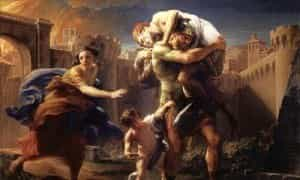

< < < Back
Pious Aeneas And A Passiontide Reflection On Impiety – Return Of Kings
We’ll take break from philosophy for a while, since the times have now brought us to the holiest days of the Christian year. I want to offer a two week reflection on impiety, which I regard as the defining vice of modernity.
Amongst the many things I would like to write for ROK, two topics that often occupy my attention are the topics of sexual license, and the seeming cooperation of Catholicism with certain crucial injustices of our day. It is fair to say that, in my online dealings with people, the two criticisms I most often receive are: 1) you should not be writing for a site that promotes promiscuity like ROK; 2) Catholicism is a traitor to European heritage and masculinity, and is now suitable only for third-world women and invalids. The topic of this reflection is closely related to both criticisms.
What initially drew me to ROK, was the marvel of a group of men acknowledging feminism was a lie, and, consequently, rejecting many of the broader, liberal premises that support that lie. Because there is so much disinformation flooding the world in support of the lie, the man disentangling himself from it is in a precarious position. I have come from the ubiquitous, feminist pan-liberalism, myself; through contact with the founts of Western civilization, I came into the heart of patriarchy—the ancient faith, reactionary politics, traditional morality and gender roles, etc. Therefore, I reckon I may have some views which may be helpful or profitable to others traveling the same road. I do not delude myself into thinking that all men will agree with me; but, just as I have learned much from men who disagree with me, I’m happy to throw what I know and believe out there for others to ponder.
As I prayed my office today, the virtue of “piety” made prominent appearance. Today’s orison at Vespers, in fact, was the paradigm, from which my patron saint’s orison was adapted: “Be nigh unto our supplications, Almighty God; and to those, whom Thou givest the pledge of Thy piety (which it behooves us confidently to await), kindly also grant the final product of Thy wonted loving-kindness.”
The Latin of the prayer is masterful; I’ve tried to tease out some of the subtleties with my translation, but it does not do justice to it. The orison at the hours, prayed that the faithful whom God had drawn to acts of devotion, would also receive from Him a “pious hearing.” The antiphons of Lauds and Vespers, like book-ends on the day, also provided relevant reflections, which, combined with reflections upon themes proper to the liturgical season, the modernist crisis and the migrant crisis, had piety and impiety much on my mind.
What is “piety?” What does it mean, to be “pious?” Most of us hear the term, and think of a fastidious little priss putting on religious airs. But in fact, piety is an eminently manly virtue, entrusted especially to the safekeeping of men. St. Thomas Aquinas defines piety as the honor we pay by bounden duty as a debt to our roots and our kin. God, the origin of all, is in the first place (and hence piety is often closely connected to the virtue of religion); after Him, are our parents, kin and country. He quotes Tully’s definition (“it is by piety that we do our duty towards kin and allies of our country, and render them faithful service”), which is hardly different from Cicero’s concept (“they name that virtue ‘piety,’ which admonishes us to fulfill our bounden duty to our fatherland, our parents, or others conjoined to us by blood”).
Now that I have learned more about our civilization’s history and heritage, what does “piety” bring to my mind? I think primarily of two things: first, the popes of modern times named Pius, who resisted the modernist crisis; second, I think of “Pious Aeneas,” the hero of the Trojan people, whose story is told by Virgil in The Aeneid. In The Iliad, he is shown as a man so famous for piety, that the Greeks and even hostile gods spare him from the general destruction of Troy. In the Aeneid, when all seems lost during the siege of Troy and he had resolved to die with his family, fighting the invaders, two divine portents dissuade them and show a path of escape. Aeneas lifts his father, Anchises, upon his shoulders, takes the Trojan Lares and Penates, and, accompanied by his wife, his son Ascanius and a small band of followers, escapes the siege of Troy. Eventually, he will make his way to Latium and become the progenitor of the Roman people, an ancestor of Romulus and Remus. The Julians (i.e., the family of Julius and Augustus Caesar) traced their lineage back to Ascanaius and Aeneas.

Aeneas was thus often upheld as a model of piety, “pius Aeneas;” he is indeed the image of piety, carrying the gods and his aged father, and leading his family and countrymen to safety. Like Lot, he is one of the last pious and upright men, spared the divinely-decreed destruction of his civilization, that had grown decadent in the divine judgment.
Beholding Aeneas thus, piety and religion stand forth as particularly masculine qualities: the duty of loyal affection to God, kin and country. Indeed, reflection will show that only men can really safeguard these public virtues, because they require the greater male intellect, strength, emotional discipline and judgment for their effective implementation and defense in society. Women are called to practice these virtues as well, but for the above-stated reason their effective social application and defense is primarily the work of men. History also shows us that women will follow men on these points; when man have done their duty and fostered these virtues in society, women may often seem to surpass us in their daily practice; but when men fail, we find that the women who looked like our betters in times of civic virtue, are far more depraved than us in times of decadence. Indeed, abandoning maternal and pious instincts, the women will grow emotionally addicted to sexual degradation; they will murder their own children en masse as a point of pride; they will campaign for hordes of foreign rapists to be admitted across the borders. A must-see video:
Why do I say that our age is typified by the specific vice of impiety? Yes, obviously, we fail to honor God, the Church, the state, our parents and our kin. But our society does not just err in these ways; it has essentially established itself upon impiety as its only principle. When we look at the rebellion (the left, the revolution, howsoever you call it), what consistent principles does it have? The same feminist who will say “my body my choice,” is willing to ban you from drinking 32oz sodas. The same pervert who believes in denying a platform to people they disagree with, will actually force that same person to provide the catering for their own, controversial platforms. After a bit of reflection, I nearly concluded that the only two, consistent principles of the left, are 1) sexual “liberty” and 2) suspicion of any definite concept, let alone any definite truth. But then I realized that, while they are in favour of any kind of sexual degeneracy, and love to decry the “bigotry” of all dogmatism, they attack the only sound sexual act as a product of hateful, socially constructed heteronormativity, and they are quite clear and definite on the concept that tradition is to be opposed.
And that is when I realized that their real, sole, consistent principle, is contra-natural discrimination—i.e., in every place where reason and nature would draw definite distinctions and make a just discrimination in one direction or another, they are in favor of blurring matters and making an exactly contrary discrimination. This is a plainly satanic activity, and I find it to be one of the greatest vindicators of the truthfulness of the faith which it opposes. And it is not an accident, that it manifests chiefly in sexual depravity and the egalitarian, “anti-discriminatory” approach. By this two-pronged assault, the rebellion attacks man in his very origins, and abolishes anything with which he could positively identify, apart from the rebellion itself.
In other words, the principle of the rebellion is impiety—rejecting and dishonoring the very concept of God, the family, and an authentic nation with an authentic culture, to which we may feel a special sense of belonging. Bereft of any sense of his roots and without any sense of belonging, man grasps about in vain for some substantive platform or weapon of resistance. Because impiety is our organizing principle, a fog of diabolical delusion continually occludes piety, the necessary virtue, from us.
In my next article, I will discuss how the Passion of the Christ was the most sublime act of piety that could ever be, brought about (in part) by the most acute acts of impiety that could ever be. I will discuss how the impiety of our times parallels this, in the modern Passion of the Church.
Read More: The 5 Most Perfect Prayers Of The Christian Tradition